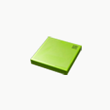
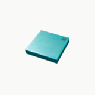
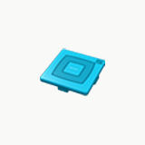
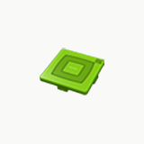
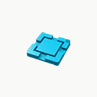
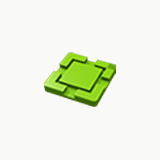

Mes Projets
Sorting Station
Objectif:
L'objectif de ce projet est de trier 3 types de caisses, Chaque type possède deux couleurs différentes (Bleu et vert) À l'aide d'un VISION SENSOR (Capteur de vision) qui donne en sortie Des valeurs en entier allant de 1 à 6 Pour les différentes boîtes.
| Type de Carton | Valeur Du Vision Sensor | Image |
| Type 1 | 1-4 |   |
| Type 2 | 2-5 |   |
| Type 3 | 3-6 |   |
Programmation- TIA Portal
Separating station
Objectif :
L'objectif de ce projet et de séparer un objet de deux couleurs dans différents convoyeurs. Le Vision Sensor detecte les cartons vert avec une valeur de 4 et les cartons bleu avec une valeur de 1.A l'aide du Vision Sensor on fait en sorte que les cartons vert passe seulement dans le convoyeur 1 , et les cartons bleu passe seulement dans le convoyeur 2.
On a 4 cas possible :
1er cas :
c'est le cas ou les cartons vert doivent changer de chemin et passer au convoyeur 2

2eme cas:
c'est le cas ou les cartons Bleu doivent changer de chemin et passer au convoyeur 1

3eme cas:
c'est le cas ou les cartons vert doivent changer de chemin et passer au convoyeur 2 et les cartons Bleu doivent changer de chemin et passer au convoyeur 1

4eme cas:
c'est le cas normal ou les cartons vert passe dans le convoyeur 2 et les cartons bleu dans le convoyeur 1